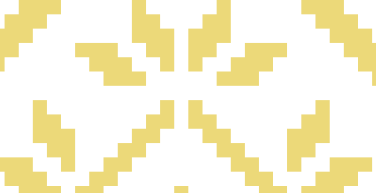

<!DOCTYPE html>
<html lang="en">
<head>
    <meta charset="UTF-8">
    <meta name="viewport" content="width=device-width, initial-scale=1.0">
    <title>Footer</title>
    <link rel="preconnect" href="https://fonts.googleapis.com">
    <link rel="preconnect" href="https://fonts.gstatic.com" crossorigin>
    <link href="https://fonts.googleapis.com/css2?family=Manrope&display=swap" rel="stylesheet">
    <link rel="stylesheet" href="https://cdnjs.cloudflare.com/ajax/libs/modern-normalize/2.0.0/modern-normalize.min.css">
    <link rel="stylesheet" href="./css/general.css">
    <link rel="stylesheet" href="./css/reset.css">
    <link rel="stylesheet" href="./css/styles.css">
    <link rel="stylesheet" href="./css/footer.css">
</head>
<body>
    <!-- ============ FOOTER ============ -->
    <footer class="page-footer">
        <div class="container">
            <div class="page-footer-bottom-block">
                <nav class="page-navigation">
                    <ul class="menu list">
                        <li class="menu-item">
                            <a class="menu-link about-us" href="#">About us</a>
                        </li>
                        <li class="menu-item">
                            <a class="menu-link" href="#">Customer order</a>
                        </li>
                        <li class="menu-item">
                            <a class="menu-link" href="#">Our collection</a>
                        </li>
                        <li class="menu-item">
                            <a class="menu-link" href="#">Testimonials</a>
                        </li>
                    </ul>
                </nav>
            </div>
            <div class="page-footer-top-block">
                <h2 class="page-footer-title">
                    A touch of <span class="accent-color">Ukrainian</span> culture in every embroidery
                </h2>
            </div>
          
            <div class="thumb">
                <picture>
                    <source media="(min-width: 1440px)" srcset="./image/ornamentdestopmax@2x.png 2x, ./image/ornamentdestopmax.png 1x">
                    <source media="(min-width: 1280px)" srcset="./image/ornamentdesktop@2x.png 2x, ./image/ornamentdesktop.png 1x">
                    <source media="(min-width: 768px)" srcset="./image/ornamenttablet@2x.png 2x, ./image/ornamenttablet.png 1x">
                    
                </picture>
            </div>
            
        </div>
    </footer>
</body>
</html>
